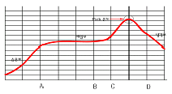
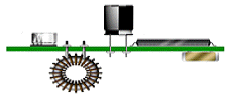
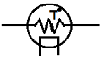

전자부품장착기능사 (2013-07-21 기출문제)
1과목: SMT 개론
1. 리플로우 장비의 가열방식으로 틀린 것은?
- 적외선 법
- 전기 저항법
- 열풍 법
- 침적 법
(정답률: 82%)

2. 표면실장공정에 사용할 수 있는 기판(PCB)의 최소 크기 L(mm) x W(mm) x T(mm)는 대략 얼마인가?
- 30mm x 30mm x 0.2mm
- 40mm x 40mm x 0.3mm
- 50mm x 50mm x 0.4mm
- 60mm x 60mm x 0.5mm
(정답률: 83%)
3. 다음 중 자동형 스크린프린터의 내부기능이 아닌 것은?
- 기판 및 메탈마스크를 자동 보정한다.
- 스퀴지의 압력을 자동으로 조정한다.
- 인쇄 구간별로 속도조절이 가능하다.
- 초음파 세척을 할 수 있다.
(정답률: 86%)
4. 다음 중 Solder 선택 시 적용할 사항이 잘못된 것은?
- 표면세정 작용 및 재산화 방지작용을 위해서 Flux 성분 함유량이 아주 작은 제품군을 적용한다.
- 납의 전도성이 나쁠 경우 Ag(은) 함유량이 있는 제품군을 적용한다.
- 납의 용융점을 낮추기 위해 Bi(비스무트) 함유량이 있는 제품군을 사용한다.
- 환경규제 적용 Solder Paste(Pb-free) 선택시 이에 적합한 Reflow(경화 Device) 장비를 적용한다.
(정답률: 73%)
5. Screen Printer 인쇄공정 중 Metal Mask 와 PWB의 Gap이 Fine-Pitch일 경우 가장 알맞은 간격은?
- 0.0~0.5mm
- 0.5~1.0mm
- 1.0~1.5mm
- 1.5~2.0mm
(정답률: 69%)
6. 기판의 인식마크에 대한 설명으로 잘못된 것은?
- 기판마크 위치를 카메라로 인식하여, 장착 위치를 보정하기 위한 것이다.
- 인식마크의 형상은 원형의 1가지로만 제작이 가능하다.
- 인식마크의 재질은 동박, Solder 도금 등 다양화 할 수 있다.
- 기판의 제지에 따라 인식마크를 선명하게 식별할 수 있는 밝기가 달라진다.
(정답률: 85%)
7. Mounter Setting 시 유의사항이 아닌 것은?
- Back Pint의 Setting 불량
- 장착 Speed의 Setting 불량
- 장착 부품의 Color 불량
- 노즐 (Nozzle)의 선택 불량
(정답률: 77%)
8. 이형 Mounter에서 작업할 경우 옳지 않은것은?
- PCB의 피디셜 마크(Fiducial Mark)를 인식하여 장착 Error를 방지한다.
- 큰 Size의 이형부품을 작업할 시에는 PCB의 평탄도를 맞추지 않아도 된다.
- 부품의 Size에 맞게 Nozzle를 선택하여 Pickup Error를 최소화 한다.
- Fine Pitch 작업 시에는 부품의 Pickup위치, 이송시간, 부품의 높이 등을 확인해야 한다.
(정답률: 82%)
9. 메탈 마스크 중 Additive 마스크에 대한 설명으로 옳은 것은?
- 브리지 발생이 높다.
- 피치 폭이 0.3mm 이하의 초정밀 부품에는 사용이 곤란하다.
- 제작기간이 길어 단납기 대응이 어렵고, 가격이 비싸다.
- 빠짐성이 좋지 않아 패턴 폭을 줄일 수 없다
(정답률: 76%)
10. 솔더링 후의 검사 방법으로 환경검사에 해당하는 것은?
- X-선 투과검사
- 인장 파괴검사
- 초음파 검사
- 열피로 검사
(정답률: 72%)
11. 표면실장용 MELF (Metal Electrode Leadless Faced)에 대한 설명으로 틀린 것은?
- 금속전기표면 소자이다.
- 표면실장용 실린더 (Cylinder)형 부품이다.
- 수동소자에 사용되는 부품형태이다.
- 몸체 양끝에는 절연물로 만들어진 캡 (Cap)이 있다.
(정답률: 75%)
12. 비전검사장비 (AOI: Automated Optical Inspector)에 대한 설명으로 틀린 것은?
- PLCC, SOJ, BGA 등의 납땜, 미납의 검출이 가능하다.
- QFP IC의 납땜 Short, 장착 틀어짐 검출이 가능하다.
- 문자인식이 가능함으로 오삽, 역삽 검출이 가능하다.
- QFP IC, 트랜지스터 (SOT), Fine Pitch 콘넥터 등 Lead들뜸 검출이 가능하다.
(정답률: 69%)
13. 다음 중 솔더 크림 선택 시 고려사항이 아닌 것은?
- 용융점 및 온도 프로파일 (Profile)
- 솔더의 점도 및 칙소성
- 부품균열
- 플럭스 (Flux)의 무게 비
(정답률: 61%)
14. 일반적인 표면실장 부품의 공급형태가 아닌 것은?
- Tapping (Reel)
- Tray
- Stick
- Pipe
(정답률: 81%)
15. 다음 중 기판에 힘을 발생시켜, 실장되어 있는 부품의 변형률 및 단락 여부 등을 측정하는 시험 방법은?
- 열 충격 시험
- 벤딩 시험
- 고온 고습 시험
- PCT (Pressure Cooker Test)
(정답률: 78%)
16. 스퀴지가 인쇄성에 미치는 요소가 아닌 것은
- 평행도
- 경도
- 재질
- 갭 (Gap)
(정답률: 77%)
17. Chip 0603을 EIA (inch) size 로 표시한 것은?
- 10⑤
- 0402
- 0201
- 010⑤
(정답률: 75%)
18. 표면 실장기 (표준품)에서 기판(PWB)의 휨 정도에 따른 생산 가능한 범위를 설명한 것이다. 올바른 것은?
- 평면기준에서 위 방향으로 최대 0.5mm, 아래 방향으로 최대 0.5mm 이다.
- 평면기준에서 위 방향으로 최대 1mm, 아래 방향으로 최대 1mm 이다.
- 평명기준에서 위 방향으로 최대 3mm, 아래 방향으로 최대 3mm 이다.
- 평면기준에서 위 방향으로 최대 5mm, 아래 방향으로 최대 5mm 이다.
(정답률: 77%)
19. 다음 중 비젼 검사기에서 검출이 안되는 것은?
- 오삽 불량
- BGA 브릿지 불량
- QFP냉납 불량
- IC 뒤집힘 불량
(정답률: 61%)
20. 장착 종정에서 부품을 장착한 후 솔더가 눌려 부품 밖으로 빠져나오는 현상이 발생했다. 이때 장착 장비에서 행하는 조치로 가장 적절한 것은?
- 부품의 흡착 위치 재조정
- 부품의 장착 위치 재조정
- 부품의 흡착 높이 재조정
- 부품의 장착 높이 재조정
(정답률: 75%)
2과목: 전자기초
21. SMT 부품의 종작특성의 장점으로 옳은 것은
- 열에 약하다.
- 고주파 (RF) 특성이 좋다.
- 진동과 충격에 강하다.
- 소형부품으로 취급이 쉽다.
(정답률: 81%)
22. 다음 중 SMT 공정 작업환경에 대한 설명으로 옳은 것은?
- 이온아이져 (Ionizer)는 최대 유효거리의 이격거리를 확인하여 설치한다.
- 제전용 매트는 도전층이 표면으로 오도록 설치한다.
- 작업장의 습도를 가능한 상대습도를 30%이하로 낮춰 정전기 발생을 줄이다.
- 어스링은 손목착용이 발목착용보다 접지효과가 있다.
(정답률: 80%)
23. 솔더링 연납땜의 납을 녹이는 융점온도는?
- 300°C 미만
- 450°C 미만
- 600°C 미만
- 750°C 미만
(정답률: 77%)
24. 다음 중에서 솔더링 재료로 적합하지 않은 것은?
- 솔더
- 플럭스
- 고무
- 모재 금속 (기판, 부품전극)
(정답률: 83%)
25. 표면실장 장치 (Mounter)에서 부품을 흡착하는 부분의 도구를 무엇이라 하는가?
- 노즐
- 카셋트
- 헤드
- 헤드 유니트
(정답률: 76%)
26. 아래 그림과 같은 이상적 온도 Profile 중 A-B 예열구간의 대략 시간 설정으로 알맞은 것은?

- 60-120초
- 120-180초
- 180-240초
- 240-300초
(정답률: 75%)
27. 솔더 크림을 인쇄하고 칩 부품을 장착한 후 리플로 솔더링 될 때까지 부품탈락을 고정 시켜주는 힘은?
- 크림 솔더의 점착력
- 크림 솔더의 인장강도
- 크림 솔더의 칙소성
- 크림 솔더의 무게
(정답률: 81%)
28. 그림과 같이 인쇄회로기판에 부품을 표면실장하는 경우 반드시 인라인으로 구성되어야만 하는 설비가 아닌 것은?(오류 신고가 접수된 문제입니다. 반드시 정답과 해설을 확인하시기 바랍니다.)

- 스크린 프린터
- 마운터
- 리플로우
- X –Ray 검사장치
(정답률: 76%)
29. Solder cream 종류, 인쇄사양, 실장공정 및 Reflow 시간, 냉각속도 등이 발생요인이며, C-ray 촬영을 하면 접합된 내부에 작은 공기방울이 보인다. 해당하는 불량명칭은 무엇인가?
- Manhattan (Tombstone)
- Solder ball
- Void
- Short
(정답률: 67%)
30. 칩 부품을 장착할 때 장착 높이설정 불량으로 발생하는 문제점은?
- 칩 부품에 솔더 크림이 눌려 브릿지불량이 발생한다.
- 장착부품이 틀어지거나 이탈, 솔더볼, 쇼트등의 불량이 나타난다.
- 솔더크림이 산화되어 불량이 발생한다.
- 온도가 올라가 부품 특성 불량이 생긴다.
(정답률: 72%)
31. 무연솔더 (Pb-free Solder)의 주요 불량유형이 아닌 것은?
- 리프트 오프 (Lift-off)
- 휘스커 (Whisker)
- 솔더 포트 (Pot) 내부 침식
- 접합 강도 저하
(정답률: 63%)
32. 다음 중 표면실장기술의 부품관련 특징을 설명한 것으로 틀린 것은?
- 칩 (Chip) 부품은 리드를 포함하며 소형이다
- 부품실장은 표면을 사용하기 때문에 양면을 실장할 수 있다.
- 칩 부품은 리드선이 없어 인덕턴스가 감소하고 고주파 특성이 향상된다.
- 부품실장 밀도가 향상된다.
(정답률: 52%)
33. 솔더 페이스트 인쇄 불량의 요인이 아닌 것?
- 스퀴지 속도
- 판 분리 우선순위 및 속도
- 가열시간
- 솔더 페이스트 열화
(정답률: 67%)
34. PCB 기판에 있어서 무연화 (Pb-free) 대책에 해당하는 것은?
- PCB 두께 감소
- 전자파 설계
- 내열성 확보
- 수동 칩 내장
(정답률: 73%)
35. 프린트 공정에서 스퀴지 스트로크 압력과대, 스퀴지 경도 부족으로 인한 불량 유형은?
- 인쇄된 납량이 많음
- 솔더페이스트 안 빠짐
- 메탈마스크 판구멍 막힘
- 메탈마스크 밑면 오염
(정답률: 65%)
36. PCB는 무엇의 약자인가?
- Printed Circuit Board
- Panel Circuit Board
- Pattern Circuit Board
- Plating Circuit Board
(정답률: 84%)
37. A/D 변환기 중 많은 수의 비교기가 사용되므로 변환기 중에서 속도가 매우 빠른 반면 값이 비싼 변환기는?
- 디지털-램프 A/D 변환기
- 병렬형 A/D 변환기
- 선형 램프 A/D 변환기
- 연속근사 A/D 변환기
(정답률: 75%)
38. LC 발진회로에서 LC회로의 C 값을 4배로 하면 그 주파수는 원래 주파수에 비해 어떻게 바뀌는가?
- 2배로 커진다.
- 4배로 커진다.
- 1/2로 작아진다.
- 1/4로 작아진다.
(정답률: 75%)
39. 다음 중 직류(DC)를 교류(AC)로 변환하는 장치는?
- 인버터
- 변압기
- 컨버터
- 조삼기
(정답률: 69%)
40. 전계 효과 트랜지스터(FET)의 특징에 관한설명으로 틀린 것은?
- 전자와 정공 2개의 반송자에 의하여 동작하는 양극성 소자이다.
- 전압제어소자로 다수 캐리어에 의해 작동하며, 게이트의 역전압에 의해 드레인 전류가 제어된다.
- 일반 트랜지스터에 비하여 입력 임피던스가 높아 전압증폭기로 사용된다.
- 전력소비가 적고 소형화에 유리하여 대규모 IC에 적합하다.
(정답률: 61%)
3과목: 공압기초
41. 다음 전자기기 기호가 의미하는 것은?

- 포토 트랜지스터
- 서미스터
- 정전압 다이오드
- 전계 효과 트랜지스터
(정답률: 69%)
42. CAD 프로그램의 주요기능으로 거리가 먼 것은?
- 부품의 등록기능
- 부품의 배치기능
- 작성된 회로의 설계규칙검사
- PCB 가공기능
(정답률: 73%)
43. 오실로스코프를 사용하여 바로 측정할 수 없는 것은?
- 저항
- 전압
- 위상
- 주파수
(정답률: 66%)
44. 다음 중 일반적인 다층 PCB 제조공정 순서로 옳은 것은?
- 내층재 재단 → 내층의 가공 → 적층 → 외층의 가공 → 가이드 홀 가공
- 내층재 재단 → 내층의 가공 → 적층 → 가이드 홀 가공 → 외층의 가공
- 내층재 재단 → 내층의 가공 → 가이드 홀 가공 → 적층 → 외층의 가공
- 내층재 재단 → 가이드 홀 가공 → 내층의 가공 → 적층 → 외층의 가공
(정답률: 59%)
45. 회로나 전송계를 측정할 경우에 신호원과 부하사이 또는 전송로와 부하사이에 접소하여부하에 걸리는 전압을 임의뢰 감쇠시키는 기구는 무엇인가?
- 어테뉴에이터 (Attenuator)
- 인덕터 (Inductor)
- 커패시터 (Capacitor)
- 트랜지스터 (Transistor)
(정답률: 66%)
46. 실리콘 제어정류기 (SCR)에 관한 설명으로 틀린 것은?
- PNPN 소자 중 하나로서 계전기 제어, 모터 제어 등 광범위하게 이용된다.
- 다이오드와 같이 역 바이어스 때는 차단상태가 된다.
- 게이트에 전류를 흐르게 해서 ON 상태가 되면 게이트 전류를 0으로 하여도 계속 전류가 흐른다.
- 게이트가 2개가 쌍방향으로 흐른다.
(정답률: 71%)
47. PCB 가공 과정에 있어서 면취 (Bevelling) 가공을 하는 주된 이유는?
- 도금 두께를 일정하게 하기 위해
- 균일한 노광 효과를 가지기 위해
- 부스러기 등에 의한 배선 패턴의 단락을 방지하기 위해
- 동박적층판에 남은 약품이나 연마제 등을 제거하기 위해
(정답률: 63%)
48. 다음 중 n형 반도체를 만드는 불순물이 아닌 것은?
- As (비소)
- Sb (안티몬)
- P (인)
- In (인듐)
(정답률: 68%)
49. 다음 포토다이오드의 종류 중 관전류 증촉작용이 있고 암전류가 적으며 응답속도가 빠르고 파장 감도가 넓어서 광섬유에 의한 광통신 등에 사용되는 것은?
- PN 포토다이오드
- PIN 포토다이오드
- 애벌런치 포토다이오드
- 포토센서모듈 (포토 IC)
(정답률: 70%)
50. PCB의 제조공정 중에 부식액, 도금액, 납땜 등으로부터 특정영역을 보호하기 위하여 사용하는 피복 재료를 통칭하는 것으로 맞는 것은?
- 랜드
- 레지스트
- 레진
- 디스미어
(정답률: 69%)
51. 미리 결정된 순서대로 제어 신호가 출력되어 순차적으로 작업이 수행되어지는 제어 방법으로 자동화에 이용되는 제어 방법은?
- 공압 제어
- 논리 제어
- 시퀀스 제어
- 서보 제어
(정답률: 74%)
52. 액추에이터의 공급 쪽 관로에 바이패스 관로를 설치하여 불필요한 압유를 탱크로 배출시켜 속도를 제어하는 회로는?
- 미터 인 회로
- 미터 아웃 회로
- 레지스터 회로
- 블리드 오프 회로
(정답률: 69%)
53. 두 개의 복동 실린더를 조합시킨 것으로 직경에 비하여 출력이 큰 실린더는?
- 차동 실린더
- 텔레스코프 실린더
- 탠덤 실린더
- 충격 실린더
(정답률: 75%)
54. 실린더에 공급되는 공기의 압력이 5 bar 이다. 이 압력은 몇 Pa 인가?
- 50000
- 500000
- 10000
- 100000
(정답률: 65%)
55. 압축공기 저장탱크에 부착해야 할 요소 중 관계없는 것은?
- 배수기
- 안전밸브
- 압력스위치
- 유량제어밸브
(정답률: 61%)
56. 다음 공압장치의 장점에 해당하지 않는 것은?
- 동력전달 방법이 간단하고 용이하다.
- 인화의 위험이 없다.
- 부하변동에도 균일한 속도를 얻을 수 있다.
- 제어가 간단하고 취급이 용이하다.
(정답률: 52%)
57. 공기의 흐름이 한 방향으로만 허용되도록 할 목적으로 사용되는 밸브는?
- 릴리프 밸브
- 체크 밸브
- 감압 밸브
- 스퀀스 밸브
(정답률: 66%)
58. 다음 중 압력의 단위로 적합하지 않은 것은?
- N/m2
- Pa
- J/s
- Bar
(정답률: 75%)
59. 다음 공기탱크의 역할과 거리가 먼 것은?
- 공기의 압력의 맥동을 평준화한다.
- 공기 중의 수분을 드레인으로 배출시킨다.
- 압력 변화를 최소화한다.
- 압축 공기의 공급을 불안정하게 한다.
(정답률: 64%)
60. 다음 증압기의 사용 목적으로 옳은 것은?
- 압력 증폭
- 속도 제어
- 스틱-슬립현상 방지
- 에너지 저장
(정답률: 61%)